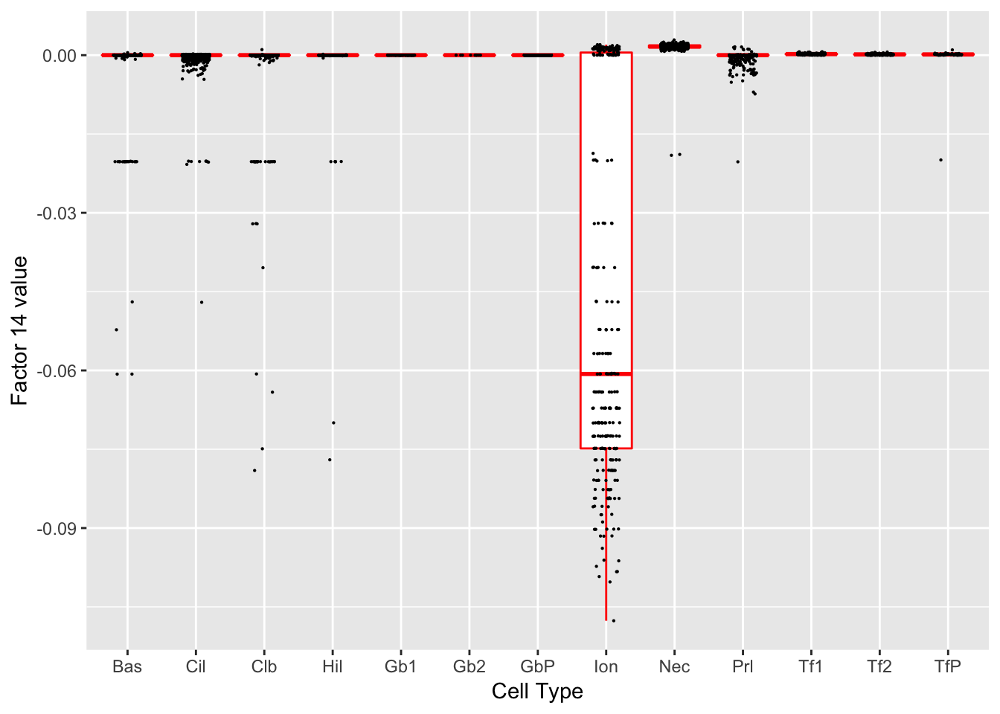

PulseSeq FLASH analysis
Jason Willwerscheid
12/4/2018
Last updated: 2018-12-04
workflowr checks: (Click a bullet for more information)-
✔ R Markdown file: up-to-date
Great! Since the R Markdown file has been committed to the Git repository, you know the exact version of the code that produced these results.
-
✔ Environment: empty
Great job! The global environment was empty. Objects defined in the global environment can affect the analysis in your R Markdown file in unknown ways. For reproduciblity it’s best to always run the code in an empty environment.
-
✔ Seed:
set.seed(20180714)The command
set.seed(20180714)was run prior to running the code in the R Markdown file. Setting a seed ensures that any results that rely on randomness, e.g. subsampling or permutations, are reproducible. -
✔ Session information: recorded
Great job! Recording the operating system, R version, and package versions is critical for reproducibility.
-
Great! You are using Git for version control. Tracking code development and connecting the code version to the results is critical for reproducibility. The version displayed above was the version of the Git repository at the time these results were generated.✔ Repository version: 8311225
Note that you need to be careful to ensure that all relevant files for the analysis have been committed to Git prior to generating the results (you can usewflow_publishorwflow_git_commit). workflowr only checks the R Markdown file, but you know if there are other scripts or data files that it depends on. Below is the status of the Git repository when the results were generated:
Note that any generated files, e.g. HTML, png, CSS, etc., are not included in this status report because it is ok for generated content to have uncommitted changes.Ignored files: Ignored: .DS_Store Ignored: .Rhistory Ignored: .Rproj.user/ Ignored: docs/.DS_Store Ignored: docs/figure/.DS_Store Untracked files: Untracked: analysis/gd_notes.Rmd Untracked: data/all_genes.csv
Expand here to see past versions:
| File | Version | Author | Date | Message |
|---|---|---|---|---|
| Rmd | 8311225 | Jason Willwerscheid | 2018-12-04 | workflowr::wflow_publish(“analysis/pulseseq.Rmd”) |
Introduction and Code
I fit 30 factors with normal-mixture priors to the PulseSeq dataset discussed in Montoro et al. I removed all genes with zero total counts and did a log1p transform of the counts. I used the following calls.
# Add 30 factors with rough backfits after every 5 factors.
fl <- flashier(data, greedy.Kmax = 30, var.type = 1, prior.type = "normal.mix", ash.param = list(optmethod = "mixSQP"), backfit.every = 5, final.backfit = TRUE, backfit.order = "montaigne", warmstart.backfits = FALSE)
# Process time on RCC cluster: 92 minutes
# Do a more thorough backfit.
fl <- flashier(data, flash.init = fl, greedy.Kmax = 0, var.type = 1, prior.type = "normal.mix", ash.param = list(optmethod = "mixSQP"), final.backfit = TRUE, backfit.order = "dropout", warmstart.backfits = FALSE, backfit.maxiter = 500)
# Process time: 266 minutesThe following code is used to produce the boxplots and tables below.
suppressMessages({
library(ggplot2)
library(topGO)
library(org.Mm.eg.db)
})
#> Warning: package 'ggplot2' was built under R version 3.4.4
fl <- readRDS("~/Downloads/PulseSeq30_backfit.rds")
# Remove large data object to free up memory.
fl$fit$Y <- NULL
# Data frame containing cell type and loadings for each factor.
PSdf <- data.frame(fl$loadings$normalized.loadings[[2]])
cell.names <- rownames(fl$loadings$normalized.loadings[[2]])
cell.types <- as.factor(sapply(strsplit(cell.names, "_"), `[`, 5))
levels(cell.types) <- c("Bas", "Cil", "Clb", "Hil", "Gb1", "Gb2", "GbP",
"Ion", "Nec", "Prl", "Tf1", "Tf2", "TfP")
PSdf$cell.type <- cell.types
# Need to select signficant genes for topGO.
# Scale gene loadings by scale constant * maximum cell loading.
s <- fl$loadings$scale.constant *
apply(abs(fl$loadings$normalized.loadings[[2]]), 2, max)
gene.loadings <- fl$loadings$normalized.loadings[[1]]
gene.loadings <- gene.loadings * rep(s, each = nrow(gene.loadings))
# Get a pseudo-t statistic by dividing by the residual SE.
gene.t <- gene.loadings * sqrt(fl$fit$tau)
# Convert to a p-value.
gene.p <- 2 * (1 - pnorm(abs(gene.t)))
# Select significant genes using Benjamini-Hochberg.
BH <- function(k, alpha = 0.01) {
pvals <- gene.p[, k]
selected <- rep(0, length(pvals))
names(selected) <- names(pvals)
n <- length(pvals)
sorted.pvals <- sort(pvals)
BH <- sorted.pvals < alpha / (n - 0:(n - 1))
cutoff <- min(which(!BH))
selected[pvals < sorted.pvals[cutoff]] <- 1
return(selected)
}
gene.sig <- sapply(1:ncol(gene.p), BH)
# How many significant genes per factor are there?
colSums(gene.sig)
#> [1] 319 565 42 79 192 2 171 194 36 1495 1 1946 0 72
#> [15] 11 54 0 84 0 246 135 0 210 19 0 112 180 159
#> [29] 188 929
# I will only look at the factors with at least ten significant genes.
kset <- (1:ncol(gene.p))[colSums(gene.sig) > 9]
# Set up topGOdata object.
GO.list <- as.factor(gene.sig[, 1])
GOdata <- new("topGOdata", ontology = "BP", allGenes = GO.list,
annot = annFUN.org, mapping = "org.Mm.eg", ID = "symbol")
#>
#> Building most specific GOs .....
#> ( 11574 GO terms found. )
#>
#> Build GO DAG topology ..........
#> ( 15465 GO terms and 36320 relations. )
#>
#> Annotating nodes ...............
#> ( 17307 genes annotated to the GO terms. )# Loop over kset.
for (k in kset) {
cat(paste("## Factor", k, "\n"))
fctr <- paste0("X", k)
plot(ggplot(PSdf, aes_string(x = "cell.type", y = fctr)) +
geom_boxplot(outlier.shape = NA, color = "red") +
geom_jitter(position = position_jitter(0.2), cex = 0.1) +
labs(x = "Cell Type", y = paste("Factor", k, "value")))
GOdata@allScores <- as.factor(gene.sig[, k])
result <- suppressMessages(
runTest(GOdata, algorithm = "classic", statistic = "fisher")
)
allRes <- GenTable(GOdata, classic = result, topNodes = 10)
print(knitr::kable(allRes))
cat("\n")
}Factor 1

| GO.ID | Term | Annotated | Significant | Expected | classic |
|---|---|---|---|---|---|
| GO:0006412 | translation | 554 | 84 | 9.51 | < 1e-30 |
| GO:0043043 | peptide biosynthetic process | 575 | 84 | 9.87 | < 1e-30 |
| GO:0006518 | peptide metabolic process | 700 | 90 | 12.01 | < 1e-30 |
| GO:0043604 | amide biosynthetic process | 644 | 85 | 11.05 | < 1e-30 |
| GO:0043603 | cellular amide metabolic process | 830 | 91 | 14.24 | < 1e-30 |
| GO:1901566 | organonitrogen compound biosynthetic pro… | 1460 | 106 | 25.05 | < 1e-30 |
| GO:0034641 | cellular nitrogen compound metabolic pro… | 5337 | 177 | 91.59 | 5.7e-25 |
| GO:0044271 | cellular nitrogen compound biosynthetic … | 3940 | 148 | 67.61 | 8.2e-25 |
| GO:0044249 | cellular biosynthetic process | 4799 | 162 | 82.35 | 1.0e-22 |
| GO:1901576 | organic substance biosynthetic process | 4895 | 163 | 84.00 | 3.1e-22 |
Factor 2
| GO.ID | Term | Annotated | Significant | Expected | classic |
|---|---|---|---|---|---|
| GO:0044782 | cilium organization | 291 | 89 | 8.61 | <1e-30 |
| GO:0060271 | cilium assembly | 272 | 82 | 8.05 | <1e-30 |
| GO:0003341 | cilium movement | 69 | 45 | 2.04 | <1e-30 |
| GO:0007018 | microtubule-based movement | 242 | 70 | 7.16 | <1e-30 |
| GO:0070925 | organelle assembly | 672 | 104 | 19.88 | <1e-30 |
| GO:0030031 | cell projection assembly | 450 | 85 | 13.31 | <1e-30 |
| GO:0120031 | plasma membrane bounded cell projection … | 443 | 84 | 13.11 | <1e-30 |
| GO:0007017 | microtubule-based process | 639 | 99 | 18.90 | <1e-30 |
| GO:0035082 | axoneme assembly | 60 | 37 | 1.78 | <1e-30 |
| GO:0001578 | microtubule bundle formation | 88 | 39 | 2.60 | <1e-30 |
Factor 3
| GO.ID | Term | Annotated | Significant | Expected | classic |
|---|---|---|---|---|---|
| GO:0006412 | translation | 554 | 17 | 1.31 | 2.3e-15 |
| GO:0043043 | peptide biosynthetic process | 575 | 17 | 1.36 | 4.2e-15 |
| GO:0043604 | amide biosynthetic process | 644 | 17 | 1.53 | 2.7e-14 |
| GO:0006518 | peptide metabolic process | 700 | 17 | 1.66 | 1.0e-13 |
| GO:0043603 | cellular amide metabolic process | 830 | 17 | 1.97 | 1.6e-12 |
| GO:0042274 | ribosomal small subunit biogenesis | 68 | 7 | 0.16 | 2.1e-10 |
| GO:0022613 | ribonucleoprotein complex biogenesis | 379 | 11 | 0.90 | 8.4e-10 |
| GO:0019730 | antimicrobial humoral response | 51 | 6 | 0.12 | 2.0e-09 |
| GO:0042254 | ribosome biogenesis | 251 | 9 | 0.59 | 5.7e-09 |
| GO:1901566 | organonitrogen compound biosynthetic pro… | 1460 | 17 | 3.46 | 1.1e-08 |
Factor 4
| GO.ID | Term | Annotated | Significant | Expected | classic |
|---|---|---|---|---|---|
| GO:0006412 | translation | 554 | 36 | 2.24 | < 1e-30 |
| GO:0043043 | peptide biosynthetic process | 575 | 36 | 2.33 | < 1e-30 |
| GO:0006518 | peptide metabolic process | 700 | 37 | 2.83 | < 1e-30 |
| GO:0043604 | amide biosynthetic process | 644 | 36 | 2.60 | < 1e-30 |
| GO:0043603 | cellular amide metabolic process | 830 | 37 | 3.36 | 1.6e-30 |
| GO:1901566 | organonitrogen compound biosynthetic pro… | 1460 | 37 | 5.91 | 7.7e-22 |
| GO:0009059 | macromolecule biosynthetic process | 4091 | 49 | 16.55 | 2.6e-16 |
| GO:0044271 | cellular nitrogen compound biosynthetic … | 3940 | 48 | 15.94 | 4.0e-16 |
| GO:0034645 | cellular macromolecule biosynthetic proc… | 3989 | 48 | 16.13 | 6.7e-16 |
| GO:0010467 | gene expression | 4479 | 50 | 18.12 | 1.8e-15 |
Factor 5
| GO.ID | Term | Annotated | Significant | Expected | classic |
|---|---|---|---|---|---|
| GO:0006518 | peptide metabolic process | 700 | 27 | 6.92 | 1.2e-09 |
| GO:0043603 | cellular amide metabolic process | 830 | 29 | 8.20 | 2.7e-09 |
| GO:0043604 | amide biosynthetic process | 644 | 22 | 6.36 | 4.0e-07 |
| GO:0006412 | translation | 554 | 20 | 5.47 | 6.0e-07 |
| GO:0043043 | peptide biosynthetic process | 575 | 20 | 5.68 | 1.1e-06 |
| GO:0050896 | response to stimulus | 6576 | 94 | 64.97 | 4.5e-06 |
| GO:0050909 | sensory perception of taste | 51 | 6 | 0.50 | 1.1e-05 |
| GO:0007186 | G-protein coupled receptor signaling pat… | 685 | 20 | 6.77 | 1.5e-05 |
| GO:0006575 | cellular modified amino acid metabolic p… | 146 | 9 | 1.44 | 1.5e-05 |
| GO:0050900 | leukocyte migration | 276 | 12 | 2.73 | 2.0e-05 |
Factor 7
| GO.ID | Term | Annotated | Significant | Expected | classic |
|---|---|---|---|---|---|
| GO:0007610 | behavior | 617 | 25 | 5.70 | 4.8e-10 |
| GO:0099504 | synaptic vesicle cycle | 119 | 11 | 1.10 | 1.3e-08 |
| GO:0048489 | synaptic vesicle transport | 127 | 11 | 1.17 | 2.6e-08 |
| GO:0097480 | establishment of synaptic vesicle locali… | 127 | 11 | 1.17 | 2.6e-08 |
| GO:0099003 | vesicle-mediated transport in synapse | 128 | 11 | 1.18 | 2.9e-08 |
| GO:0097479 | synaptic vesicle localization | 134 | 11 | 1.24 | 4.6e-08 |
| GO:0003008 | system process | 1429 | 35 | 13.21 | 7.5e-08 |
| GO:0033555 | multicellular organismal response to str… | 84 | 9 | 0.78 | 8.0e-08 |
| GO:0006887 | exocytosis | 295 | 15 | 2.73 | 1.0e-07 |
| GO:0050877 | nervous system process | 867 | 26 | 8.02 | 1.0e-07 |
Factor 8
| GO.ID | Term | Annotated | Significant | Expected | classic |
|---|---|---|---|---|---|
| GO:0007049 | cell cycle | 1476 | 110 | 15.27 | <1e-30 |
| GO:0051301 | cell division | 526 | 75 | 5.44 | <1e-30 |
| GO:0022402 | cell cycle process | 947 | 89 | 9.79 | <1e-30 |
| GO:0000278 | mitotic cell cycle | 733 | 79 | 7.58 | <1e-30 |
| GO:1903047 | mitotic cell cycle process | 567 | 71 | 5.86 | <1e-30 |
| GO:0007059 | chromosome segregation | 285 | 56 | 2.95 | <1e-30 |
| GO:0000280 | nuclear division | 362 | 49 | 3.74 | <1e-30 |
| GO:0098813 | nuclear chromosome segregation | 222 | 40 | 2.30 | <1e-30 |
| GO:0048285 | organelle fission | 410 | 49 | 4.24 | <1e-30 |
| GO:0140014 | mitotic nuclear division | 231 | 40 | 2.39 | <1e-30 |
Factor 9
| GO.ID | Term | Annotated | Significant | Expected | classic |
|---|---|---|---|---|---|
| GO:0009059 | macromolecule biosynthetic process | 4091 | 21 | 6.62 | 1.3e-08 |
| GO:0034645 | cellular macromolecule biosynthetic proc… | 3989 | 20 | 6.45 | 7.5e-08 |
| GO:0035914 | skeletal muscle cell differentiation | 69 | 5 | 0.11 | 8.0e-08 |
| GO:0006412 | translation | 554 | 9 | 0.90 | 1.3e-07 |
| GO:0071310 | cellular response to organic substance | 1800 | 14 | 2.91 | 1.6e-07 |
| GO:0043043 | peptide biosynthetic process | 575 | 9 | 0.93 | 1.8e-07 |
| GO:0031324 | negative regulation of cellular metaboli… | 2194 | 15 | 3.55 | 2.5e-07 |
| GO:0044249 | cellular biosynthetic process | 4799 | 21 | 7.76 | 2.7e-07 |
| GO:0070887 | cellular response to chemical stimulus | 2239 | 15 | 3.62 | 3.2e-07 |
| GO:1901576 | organic substance biosynthetic process | 4895 | 21 | 7.92 | 3.9e-07 |
Factor 10
| GO.ID | Term | Annotated | Significant | Expected | classic |
|---|---|---|---|---|---|
| GO:0048519 | negative regulation of biological proces… | 4491 | 520 | 356.02 | 2.3e-24 |
| GO:0048523 | negative regulation of cellular process | 4081 | 481 | 323.52 | 8.8e-24 |
| GO:0006950 | response to stress | 2940 | 372 | 233.07 | 6.2e-23 |
| GO:0006518 | peptide metabolic process | 700 | 133 | 55.49 | 5.6e-22 |
| GO:0008219 | cell death | 1897 | 265 | 150.38 | 1.1e-21 |
| GO:1901564 | organonitrogen compound metabolic proces… | 5378 | 581 | 426.34 | 2.9e-20 |
| GO:0043603 | cellular amide metabolic process | 830 | 143 | 65.80 | 1.8e-19 |
| GO:0048518 | positive regulation of biological proces… | 5006 | 542 | 396.85 | 1.2e-18 |
| GO:0043043 | peptide biosynthetic process | 575 | 110 | 45.58 | 1.5e-18 |
| GO:0006412 | translation | 554 | 107 | 43.92 | 2.3e-18 |
Factor 12
| GO.ID | Term | Annotated | Significant | Expected | classic |
|---|---|---|---|---|---|
| GO:0010941 | regulation of cell death | 1553 | 256 | 156.40 | 1.4e-16 |
| GO:0048523 | negative regulation of cellular process | 4081 | 549 | 411.00 | 9.5e-16 |
| GO:0048519 | negative regulation of biological proces… | 4491 | 592 | 452.29 | 2.6e-15 |
| GO:0042981 | regulation of apoptotic process | 1401 | 232 | 141.10 | 2.9e-15 |
| GO:0043067 | regulation of programmed cell death | 1418 | 234 | 142.81 | 3.2e-15 |
| GO:0008219 | cell death | 1897 | 293 | 191.05 | 4.6e-15 |
| GO:0043066 | negative regulation of apoptotic process | 823 | 155 | 82.88 | 4.7e-15 |
| GO:0043069 | negative regulation of programmed cell d… | 839 | 157 | 84.50 | 5.5e-15 |
| GO:0060548 | negative regulation of cell death | 932 | 168 | 93.86 | 1.9e-14 |
| GO:0012501 | programmed cell death | 1752 | 272 | 176.45 | 3.0e-14 |
Factor 14

| GO.ID | Term | Annotated | Significant | Expected | classic |
|---|---|---|---|---|---|
| GO:0055067 | monovalent inorganic cation homeostasis | 137 | 7 | 0.49 | 5.7e-07 |
| GO:0050801 | ion homeostasis | 673 | 13 | 2.41 | 5.9e-07 |
| GO:0048878 | chemical homeostasis | 961 | 14 | 3.44 | 5.7e-06 |
| GO:0055080 | cation homeostasis | 604 | 11 | 2.16 | 8.6e-06 |
| GO:0098771 | inorganic ion homeostasis | 620 | 11 | 2.22 | 1.1e-05 |
| GO:0006821 | chloride transport | 89 | 5 | 0.32 | 1.6e-05 |
| GO:0030004 | cellular monovalent inorganic cation hom… | 97 | 5 | 0.35 | 2.5e-05 |
| GO:0007588 | excretion | 50 | 4 | 0.18 | 3.0e-05 |
| GO:0065008 | regulation of biological quality | 3110 | 25 | 11.14 | 3.1e-05 |
| GO:0046068 | cGMP metabolic process | 55 | 4 | 0.20 | 4.4e-05 |
Factor 15
| GO.ID | Term | Annotated | Significant | Expected | classic |
|---|---|---|---|---|---|
| GO:0018979 | trichloroethylene metabolic process | 1 | 1 | 0.00 | 0.00012 |
| GO:0018931 | naphthalene metabolic process | 2 | 1 | 0.00 | 0.00023 |
| GO:0042196 | chlorinated hydrocarbon metabolic proces… | 2 | 1 | 0.00 | 0.00023 |
| GO:0042197 | halogenated hydrocarbon metabolic proces… | 2 | 1 | 0.00 | 0.00023 |
| GO:0090420 | naphthalene-containing compound metaboli… | 2 | 1 | 0.00 | 0.00023 |
| GO:0019373 | epoxygenase P450 pathway | 20 | 1 | 0.00 | 0.00231 |
| GO:0006805 | xenobiotic metabolic process | 43 | 1 | 0.00 | 0.00496 |
| GO:0019369 | arachidonic acid metabolic process | 43 | 1 | 0.00 | 0.00496 |
| GO:0071466 | cellular response to xenobiotic stimulus | 47 | 1 | 0.01 | 0.00542 |
| GO:0009410 | response to xenobiotic stimulus | 53 | 1 | 0.01 | 0.00612 |
Factor 16
| GO.ID | Term | Annotated | Significant | Expected | classic |
|---|---|---|---|---|---|
| GO:0007049 | cell cycle | 1476 | 36 | 4.18 | 1.9e-28 |
| GO:1903047 | mitotic cell cycle process | 567 | 23 | 1.61 | 1.2e-21 |
| GO:0000278 | mitotic cell cycle | 733 | 24 | 2.08 | 1.8e-20 |
| GO:0022402 | cell cycle process | 947 | 24 | 2.68 | 6.7e-18 |
| GO:0051301 | cell division | 526 | 19 | 1.49 | 8.7e-17 |
| GO:0006260 | DNA replication | 243 | 15 | 0.69 | 1.1e-16 |
| GO:0006261 | DNA-dependent DNA replication | 120 | 12 | 0.34 | 5.2e-16 |
| GO:0006259 | DNA metabolic process | 820 | 21 | 2.32 | 1.3e-15 |
| GO:0006270 | DNA replication initiation | 30 | 8 | 0.08 | 1.3e-14 |
| GO:0051276 | chromosome organization | 990 | 21 | 2.80 | 5.5e-14 |
Factor 18

| GO.ID | Term | Annotated | Significant | Expected | classic |
|---|---|---|---|---|---|
| GO:0001580 | detection of chemical stimulus involved … | 29 | 8 | 0.13 | 3.8e-13 |
| GO:0050913 | sensory perception of bitter taste | 32 | 8 | 0.14 | 9.1e-13 |
| GO:0050909 | sensory perception of taste | 51 | 9 | 0.22 | 9.8e-13 |
| GO:0050912 | detection of chemical stimulus involved … | 33 | 8 | 0.14 | 1.2e-12 |
| GO:0050907 | detection of chemical stimulus involved … | 45 | 8 | 0.20 | 1.8e-11 |
| GO:0050906 | detection of stimulus involved in sensor… | 105 | 9 | 0.46 | 8.0e-10 |
| GO:0009593 | detection of chemical stimulus | 71 | 8 | 0.31 | 8.1e-10 |
| GO:0007606 | sensory perception of chemical stimulus | 141 | 9 | 0.62 | 1.1e-08 |
| GO:0007600 | sensory perception | 511 | 14 | 2.24 | 4.1e-08 |
| GO:0051606 | detection of stimulus | 193 | 9 | 0.85 | 1.7e-07 |
Factor 20
| GO.ID | Term | Annotated | Significant | Expected | classic |
|---|---|---|---|---|---|
| GO:0071594 | thymocyte aggregation | 2 | 2 | 0.02 | 0.00010 |
| GO:0072535 | tumor necrosis factor (ligand) superfami… | 2 | 2 | 0.02 | 0.00010 |
| GO:2000307 | regulation of tumor necrosis factor (lig… | 2 | 2 | 0.02 | 0.00010 |
| GO:2000309 | positive regulation of tumor necrosis fa… | 2 | 2 | 0.02 | 0.00010 |
| GO:0007099 | centriole replication | 27 | 4 | 0.27 | 0.00015 |
| GO:0098534 | centriole assembly | 28 | 4 | 0.28 | 0.00017 |
| GO:0001807 | regulation of type IV hypersensitivity | 3 | 2 | 0.03 | 0.00030 |
| GO:0070489 | T cell aggregation | 3 | 2 | 0.03 | 0.00030 |
| GO:0051298 | centrosome duplication | 61 | 5 | 0.62 | 0.00038 |
| GO:0046599 | regulation of centriole replication | 15 | 3 | 0.15 | 0.00042 |
Factor 21

| GO.ID | Term | Annotated | Significant | Expected | classic |
|---|---|---|---|---|---|
| GO:0031424 | keratinization | 33 | 9 | 0.23 | 9.2e-13 |
| GO:0043588 | skin development | 259 | 15 | 1.80 | 3.3e-10 |
| GO:0030216 | keratinocyte differentiation | 122 | 11 | 0.85 | 8.2e-10 |
| GO:0008544 | epidermis development | 287 | 14 | 1.99 | 1.2e-08 |
| GO:0045104 | intermediate filament cytoskeleton organ… | 42 | 7 | 0.29 | 1.4e-08 |
| GO:0050891 | multicellular organismal water homeostas… | 42 | 7 | 0.29 | 1.4e-08 |
| GO:0045103 | intermediate filament-based process | 43 | 7 | 0.30 | 1.7e-08 |
| GO:0030104 | water homeostasis | 45 | 7 | 0.31 | 2.4e-08 |
| GO:0030855 | epithelial cell differentiation | 545 | 18 | 3.78 | 3.9e-08 |
| GO:0009913 | epidermal cell differentiation | 182 | 11 | 1.26 | 5.5e-08 |
Factor 23
| GO.ID | Term | Annotated | Significant | Expected | classic |
|---|---|---|---|---|---|
| GO:0002376 | immune system process | 1951 | 62 | 20.07 | 7.3e-17 |
| GO:0006955 | immune response | 1060 | 43 | 10.90 | 3.9e-15 |
| GO:1903039 | positive regulation of leukocyte cell-ce… | 169 | 18 | 1.74 | 1.4e-13 |
| GO:0007159 | leukocyte cell-cell adhesion | 305 | 22 | 3.14 | 7.6e-13 |
| GO:0022409 | positive regulation of cell-cell adhesio… | 202 | 18 | 2.08 | 3.0e-12 |
| GO:0002682 | regulation of immune system process | 1073 | 39 | 11.04 | 3.1e-12 |
| GO:0046649 | lymphocyte activation | 599 | 29 | 6.16 | 3.3e-12 |
| GO:0045321 | leukocyte activation | 707 | 31 | 7.27 | 7.0e-12 |
| GO:0050870 | positive regulation of T cell activation | 159 | 16 | 1.64 | 8.1e-12 |
| GO:1903037 | regulation of leukocyte cell-cell adhesi… | 277 | 20 | 2.85 | 8.8e-12 |
Factor 24
| GO.ID | Term | Annotated | Significant | Expected | classic |
|---|---|---|---|---|---|
| GO:0003341 | cilium movement | 69 | 3 | 0.07 | 4.0e-05 |
| GO:0007018 | microtubule-based movement | 242 | 4 | 0.24 | 7.7e-05 |
| GO:0060271 | cilium assembly | 272 | 4 | 0.27 | 0.00012 |
| GO:0044782 | cilium organization | 291 | 4 | 0.29 | 0.00016 |
| GO:0021591 | ventricular system development | 32 | 2 | 0.03 | 0.00044 |
| GO:0120031 | plasma membrane bounded cell projection … | 443 | 4 | 0.44 | 0.00077 |
| GO:0030031 | cell projection assembly | 450 | 4 | 0.44 | 0.00082 |
| GO:0061886 | negative regulation of mini excitatory p… | 1 | 1 | 0.00 | 0.00098 |
| GO:0099149 | regulation of postsynaptic neurotransmit… | 1 | 1 | 0.00 | 0.00098 |
| GO:1903353 | regulation of nucleus organization | 1 | 1 | 0.00 | 0.00098 |
Factor 26
| GO.ID | Term | Annotated | Significant | Expected | classic |
|---|---|---|---|---|---|
| GO:0042403 | thyroid hormone metabolic process | 22 | 6 | 0.13 | 2.4e-09 |
| GO:0006590 | thyroid hormone generation | 13 | 5 | 0.08 | 7.6e-09 |
| GO:0018958 | phenol-containing compound metabolic pro… | 94 | 8 | 0.55 | 7.5e-08 |
| GO:0006575 | cellular modified amino acid metabolic p… | 146 | 9 | 0.85 | 1.8e-07 |
| GO:0042445 | hormone metabolic process | 144 | 8 | 0.84 | 2.0e-06 |
| GO:0071675 | regulation of mononuclear cell migration | 41 | 4 | 0.24 | 9.4e-05 |
| GO:0036343 | psychomotor behavior | 3 | 2 | 0.02 | 0.00010 |
| GO:0061744 | motor behavior | 4 | 2 | 0.02 | 0.00020 |
| GO:0065008 | regulation of biological quality | 3110 | 33 | 18.15 | 0.00026 |
| GO:0090025 | regulation of monocyte chemotaxis | 22 | 3 | 0.13 | 0.00027 |
Factor 27
| GO.ID | Term | Annotated | Significant | Expected | classic |
|---|---|---|---|---|---|
| GO:0002376 | immune system process | 1951 | 41 | 17.25 | 8.0e-08 |
| GO:0006952 | defense response | 1161 | 29 | 10.26 | 3.1e-07 |
| GO:0045087 | innate immune response | 558 | 19 | 4.93 | 5.0e-07 |
| GO:0006955 | immune response | 1060 | 27 | 9.37 | 5.8e-07 |
| GO:0006954 | inflammatory response | 552 | 17 | 4.88 | 8.0e-06 |
| GO:0097530 | granulocyte migration | 113 | 7 | 1.00 | 6.5e-05 |
| GO:0042554 | superoxide anion generation | 28 | 4 | 0.25 | 0.00010 |
| GO:0006801 | superoxide metabolic process | 55 | 5 | 0.49 | 0.00012 |
| GO:1901292 | nucleoside phosphate catabolic process | 56 | 5 | 0.50 | 0.00013 |
| GO:1990266 | neutrophil migration | 93 | 6 | 0.82 | 0.00018 |
Factor 28
| GO.ID | Term | Annotated | Significant | Expected | classic |
|---|---|---|---|---|---|
| GO:0050912 | detection of chemical stimulus involved … | 33 | 15 | 0.26 | 1.1e-23 |
| GO:0001580 | detection of chemical stimulus involved … | 29 | 14 | 0.23 | 1.2e-22 |
| GO:0050913 | sensory perception of bitter taste | 32 | 14 | 0.25 | 7.2e-22 |
| GO:0050907 | detection of chemical stimulus involved … | 45 | 15 | 0.35 | 3.4e-21 |
| GO:0050909 | sensory perception of taste | 51 | 15 | 0.40 | 3.1e-20 |
| GO:0009593 | detection of chemical stimulus | 71 | 15 | 0.56 | 7.7e-18 |
| GO:0050906 | detection of stimulus involved in sensor… | 105 | 16 | 0.83 | 1.5e-16 |
| GO:0007606 | sensory perception of chemical stimulus | 141 | 15 | 1.11 | 3.2e-13 |
| GO:0051606 | detection of stimulus | 193 | 16 | 1.52 | 2.5e-12 |
| GO:0007186 | G-protein coupled receptor signaling pat… | 685 | 25 | 5.38 | 1.2e-10 |
Factor 29
| GO.ID | Term | Annotated | Significant | Expected | classic |
|---|---|---|---|---|---|
| GO:0002376 | immune system process | 1951 | 55 | 17.59 | 2.2e-15 |
| GO:0045321 | leukocyte activation | 707 | 28 | 6.37 | 3.5e-11 |
| GO:0001775 | cell activation | 821 | 30 | 7.40 | 4.5e-11 |
| GO:0006955 | immune response | 1060 | 33 | 9.55 | 2.8e-10 |
| GO:0002521 | leukocyte differentiation | 489 | 22 | 4.41 | 5.3e-10 |
| GO:0046649 | lymphocyte activation | 599 | 24 | 5.40 | 8.3e-10 |
| GO:0002682 | regulation of immune system process | 1073 | 32 | 9.67 | 1.6e-09 |
| GO:0002684 | positive regulation of immune system pro… | 735 | 25 | 6.63 | 9.9e-09 |
| GO:0002696 | positive regulation of leukocyte activat… | 259 | 15 | 2.33 | 1.3e-08 |
| GO:0051251 | positive regulation of lymphocyte activa… | 225 | 14 | 2.03 | 1.6e-08 |
Factor 30
| GO.ID | Term | Annotated | Significant | Expected | classic |
|---|---|---|---|---|---|
| GO:0044782 | cilium organization | 291 | 47 | 12.12 | 1.1e-15 |
| GO:0060271 | cilium assembly | 272 | 44 | 11.33 | 8.3e-15 |
| GO:0120031 | plasma membrane bounded cell projection … | 443 | 49 | 18.46 | 4.5e-10 |
| GO:0007017 | microtubule-based process | 639 | 62 | 26.62 | 4.8e-10 |
| GO:0030031 | cell projection assembly | 450 | 49 | 18.75 | 7.8e-10 |
| GO:0003341 | cilium movement | 69 | 17 | 2.87 | 2.2e-09 |
| GO:0035082 | axoneme assembly | 60 | 15 | 2.50 | 1.6e-08 |
| GO:0001578 | microtubule bundle formation | 88 | 17 | 3.67 | 1.1e-07 |
| GO:0007018 | microtubule-based movement | 242 | 29 | 10.08 | 3.2e-07 |
| GO:0000226 | microtubule cytoskeleton organization | 457 | 43 | 19.04 | 5.6e-07 |
Session information
sessionInfo()
#> R version 3.4.3 (2017-11-30)
#> Platform: x86_64-apple-darwin15.6.0 (64-bit)
#> Running under: macOS High Sierra 10.13.6
#>
#> Matrix products: default
#> BLAS: /Library/Frameworks/R.framework/Versions/3.4/Resources/lib/libRblas.0.dylib
#> LAPACK: /Library/Frameworks/R.framework/Versions/3.4/Resources/lib/libRlapack.dylib
#>
#> locale:
#> [1] en_US.UTF-8/en_US.UTF-8/en_US.UTF-8/C/en_US.UTF-8/en_US.UTF-8
#>
#> attached base packages:
#> [1] stats4 parallel stats graphics grDevices utils datasets
#> [8] methods base
#>
#> other attached packages:
#> [1] org.Mm.eg.db_3.5.0 topGO_2.30.1 SparseM_1.77
#> [4] GO.db_3.5.0 AnnotationDbi_1.40.0 IRanges_2.12.0
#> [7] S4Vectors_0.16.0 Biobase_2.38.0 graph_1.56.0
#> [10] BiocGenerics_0.24.0 ggplot2_3.1.0
#>
#> loaded via a namespace (and not attached):
#> [1] xfun_0.4 lattice_0.20-35 colorspace_1.3-2
#> [4] htmltools_0.3.6 yaml_2.2.0 blob_1.1.0
#> [7] rlang_0.3.0.1 R.oo_1.21.0 pillar_1.2.1
#> [10] glue_1.3.0 withr_2.1.2.9000 DBI_0.7
#> [13] R.utils_2.6.0 bit64_0.9-7 bindrcpp_0.2
#> [16] matrixStats_0.52.2 bindr_0.1 plyr_1.8.4
#> [19] stringr_1.3.1 munsell_0.5.0 gtable_0.2.0
#> [22] workflowr_1.0.1 flashier_0.1.0 R.methodsS3_1.7.1
#> [25] evaluate_0.12 memoise_1.1.0 labeling_0.3
#> [28] knitr_1.20.22 highr_0.7 Rcpp_1.0.0
#> [31] scales_1.0.0 backports_1.1.2 bit_1.1-12
#> [34] digest_0.6.18 stringi_1.2.4 dplyr_0.7.4
#> [37] grid_3.4.3 rprojroot_1.3-2 tools_3.4.3
#> [40] magrittr_1.5 lazyeval_0.2.1 tibble_1.4.2
#> [43] RSQLite_2.0 whisker_0.3-2 pkgconfig_2.0.1
#> [46] assertthat_0.2.0 rmarkdown_1.8 R6_2.3.0
#> [49] git2r_0.21.0 compiler_3.4.3This reproducible R Markdown analysis was created with workflowr 1.0.1